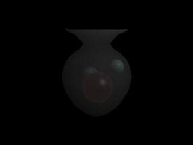
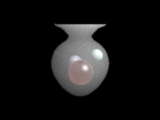
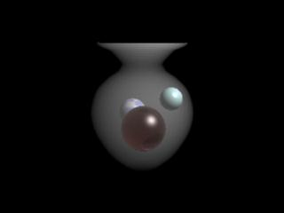
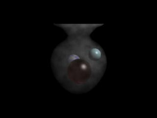

Volume Shaders
This section shows the basic workflow for mental ray volume
shaders in Maya.
References:
mental ray User Manual, Chapter 3.10.
mental ray Shaders Guide, Chapter 2.5.
Rendering with mental ray, Chapter 6, Appendix D.
Where to find volume shaders
Material shaders appear in the Hypershade > Create mental ray Nodes >
Volumetric Materials.
The following material shaders are shipped with Maya:
- mib_ray_marcher
- mib_volume
- parti_volume
Default behavior
The proper connection for a volume shader is:
- from
volumeShader.message to shadingEngine.miVolumeShader
- from
volumeShader.message to cameraShape.miVolumeShader
Ctrl+drag from a material shader to a shading engine to
make the connections.
This section
shows a workflow for using a volume shader to create smoke or fog effect.
Volume shaders can be connected to a shading engine or a
camera shape.
If connected to a shading engine, the shader affects the
inside of the object the shading engine is assigned to.
If connected to a camera shape, the shader affects the entire
scene.
Volume
rendering is an expensive procedure, using a bounding box for the
participating medium is recommended, then assign a volume shader to the
shape. In this example, we will use parti_volume to make a smoke in a shape
of vase through which three balls are visible.
Step 1. Getting Ready
Make sure the mental ray for Maya plug-in is
loaded.
- Windows > Settings/Preferences > Plug-in
Manager...
- Find Mayatomr and check loaded
Open the template scene we will use for this
section: volume_start.ma.
Step
2. Assign a material
We will create a fog effect around the balls, but also give some shape to
the fog. For example, the vase can be used to shape up the fog.
- Position the vase
so that the balls are inside the vase, then assign a material to the
vase.
- Use a refractive or transparent material to
see the effect of the volume shader because the volume shader assigned
to a material will be called when the ray is inside the object.
- We’ll use transmat shader for this
scene. transmat shader simply lets a ray pass through the object,
making the object invisible.
This is suitable for most atmospheric effects, but if you would like
to create an object filled with smoke, a refractive shader can be
used as a material.
- The ray tracing settings should be set high
enough in the mental ray Render Globals.
- Create
a transmat shader
- From Hypershade > Create mental ray
Nodes > Materials
- Select transmat.
- Assign transmat to the vase
- Select
the vase.
- RMB transmat1
from the hypershade and select Assign Material To Selection
- Check the connection between the shading
engine and the vase.
Then Render
The vase is completely invisible, and the
rest of the image should be the same as before.
transmat is useful when it comes to
simulating atmospheric effects.
Step 3.
Assign a volume shader
We’ll use the parti_volume shader.
- Create
parti_volume.
- From Hypershade > Create mental ray
Nodes > Volume Materials
- Select parti_volume.
- Connect
parti_volume1 to transmat1SG.
- The connection is from
message of parti_volume1 to miVolumeShader of transmat1SG.
- Ctrl MMB+drag parti_volume1
to transmat1SG to make the connection.
Now all the
connections are made. Render
again.
|
|
|
transmat and parti_volume
|
The vase is still invisible.
We need to adjust the parti_volume
parameters to correct the look.
Step 4. Adjust
parti_volume
|

|
|
parti_volume.extinction
|
|

|
|
parti_volume.intensity
|
- The smoke in the vase has a sampling pattern,
which we can reduce by increasing the number of volume samples.
- The default min_step_len and max_step_len is slightly
high for this scene, so Decrease
the min, max step size .
- Render
again to see how the smoke looks quite smooth.
- (However, you may have noticed the increase
in render time.)
|

|
|
parti_volume.min_step_len,
max_step_len
|
- If the smoke looks too uniform, increase
nonuniform to add variation to the density of the smoke.
- Render.
- (This will also increase the rendering time.)
|

|
|
parti_volume.nonuniform
volume_finish.ma
|
volume_finish.ma contains the scene at this point.
You can adjust more parameters to get the desired look.
mental ray Shaders Guide, Chapter 2.5 Participating Media, explains each
parameter of the shader.
NOTE: lights is
an array of lights the volume shader samples. Because mental ray for Maya
6.0 resolves the light linking in render time, and Illuminates by
Default of a light shape is turned on by default, it is no longer
necessary to connect light to this array. However, you can still manually
connect the light, in which case mental ray for Maya would not perform the
automatic light link for the shader.
Step
4. Cornell box
Another example.
cornellBox_volume_start.ma has the Cornell box scene with materials and a
light shader.
|

|
|
cornellBox_volume_start.ma
|
The front wall, back wall, and a light cover share a shading engine
transmatSG, which has transmat as its material shader.
As discussed in Material shaders,
transmat is a totally transparent material, making the object invisible.
As a matter of fact, the above three surfaces are intended for volume
effect.
Let's use parti_volume one more time.
Then render.
|

|
|
cornellBox_volume_finish.ma
|
The glare around the light is very
noticeable.
This scene will further enhanced in Photon Shaders using photon shaders and a
photon volume shader with global illumination and caustics.
|